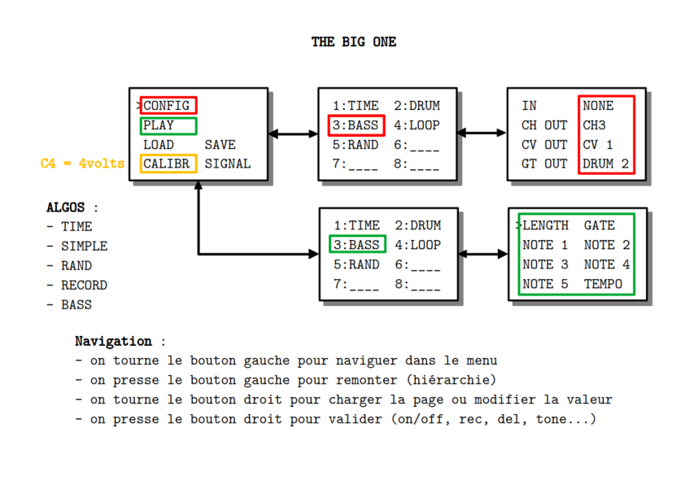

BIG_IO

PRÉSENTATION
Ce code permet de gérer un module qui possède des entrées et des sorties MIDI/CV/GATE. Les entrées et les sorties sont associées par des algorithmes.
MODE D’EMPLOI
À la mise sous tension les leds s’allument à tour de rôle pendant que l’écran affiche pendant quelques secondes un message d’information suivi du numéro de version :
THE BIG ONE
by
CIYLab
vx.y.z
La page principale permet les manipulations de base :
>CONFIG
PLAY
LOAD SAVE
CALIBR SIGNAL
Navigation :
- on tourne l’encodeur gauche pour naviguer dans le menu
- on presse l’encodeur gauche pour remonter (hiérarchie)
- on tourne l’encodeur droit pour charger la page CONF/PLAY ou modifier la valeur
- on presse l’encodeur droit pour valider la modification
Une configuration consiste à choisir un algorithme, une entrée et une sortie parmi :
In :
- NONE
- MIDI (numéro de canal de 1 à 16)
- CLOCK
Out :
- NONE
- MIDI (numéro de canal de 1 à 16)
- GATE (CLOCK, DRUM, GATE 1, GATE 2 et GATE 3)
- CV (CV 1, CV 2, CV 3)
Remarque :
Les noms des cvs et des gates correspondent à la sérigraphie mais ils sont interchangeables.
Algorithmes :
- __ : ne fait rien (none)
- SIMPLE : redirection du canal MIDI ou MIDI vers CV/GATE
- RAND : générateur aléatoire
- LOOPER : enregistrement d’une séquence
- BASS : quelques notes (ligne de basse)
- DRUM : rythmique (drum)
- TIME : gestion de l’horloge
Le module est configuré par défaut :
| ID | IN | OUT | ACTION | COMMENTS |
|---|---|---|---|---|
| 1 | NONE | CH1/CLOCK | TIME | clock |
| 2 | NONE | CH2/DRUM1 | DRUM | rythme euclidien |
| 3 | NONE | CH3/CV1/DRUM2 | BASS | bass line |
| 4 | CH1 | CH4/CV2/GATE1 | LOOP | séquenceur |
| 5 | NONE | CH5/CV3/GATE2 | RAND | notes aléatoires |
| 6 | NONE | NONE | __ | ne fait rien |
| 7 | NONE | NONE | __ | ne fait rien |
| 8 | NONE | NONE | __ | ne fait rien |
La calibration CALIBR permet de contrôler la justesse des notes sur un rack modulaire. Pour la calibration, la sortie CV1 doit fournir 4 volts.
La page PLAY permet d’accéder aux paramètres de chacun des 8 modules.
La sortie SIGNAL assigne la led rouge à l’un des gates.
Il est possible de sauvegarder SAVE ou de charger LOAD une configuration. La validation se fait par pression de l’encodeur droit. Il y a 8 slots. Chaque slot contient les 8 modules y compris les éventuelles séquences du looper. Le premier slot FACT est modifiable mais ne peut pas être écrasé. On peut le sauvegarder sur un des autres 7 slots. Sur le même principe le premier module d’une configuration sera toujours TIME pour la gestion de l’horloge. Il n’y aura pas d’autre module disponible en première position.
Reboot : une pression longue sur l’encodeur de gauche redémarre le module.
Program Change : le module réagit aux messages PC (1 à 8) et affiche le module
Control Change : message CC (1 à 8) est celui du paramètre sur le canal midi correspondant
DRUM
Module de rythme euclidien dual : on peut superposer deux rythmes.
>LENGTH GATE
BEATS SHIFT
beats shift
PITCH
- LENGTH le nombre de pas
- GATE durée d’un pas de 1 à 5
- BEATS nombre de pas actifs
- SHIFT décalage de la séquence
- beats nombre de pas actifs de la deuxième séquence
- shift décalage de la deuxième séquence
- PITCH hauteur de note sur la sortie MIDI si elle est configurée
LOOPER
C’est un séquenceur pas à pas ou temps réel.
>LENGTH
MODE
RECORD DELETE
GATE MEMORY
- LENGTH en nombre de double-croche de 0 à 64
- MODE pas à pas ou temps réel
- RECORD par pression ON/OFF
- DELETE efface la séquence par pression
- GATE longueur de 1 à 5
- MEMORY permet de charger l’une des 8 séquences en mémoire
Remarques
- en mode pas à pas les notes sont des doubles-croches
- il est monophonique : une note (on/off) maximum par PPQN
BASS
Module de ligne de basse de 1 à 5 notes (arpégiateur).
>LENGTH GATE
NOTE 1 NOTE 2
NOTE 3 NOTE 4
NOTE 5 TEMPO
- LENGTH le nombre de notes
- GATE durée d’un pas de 1 à 5
- NOTE i hauteur de la i-ème note
- TEMPO permet de ralentir la séquence jusqu’à la noire
RANDOM
Générateur aléatoire de notes.
>LENGTH GATE
SCALE KEY
FREEZE HUMAN
MIN MAX
- LENGTH longueur en doubles-croches
- GATE durée d’un pas de 1 à 5
- SCALE type de gamme
- KEY tonalité
- FREEZE gèle la séquence par pression
- HUMAN introduit des variations (octave, quinte)
- MIN et MAX fixe une plage de hauteurs
SIMPLE
Comme son nom le suggère c’est un simple module de redirection essentiellement configuré pour ses entrées/sorties.
>MIN
MAX
TRANSP
- MIN et MAX filtre dans une plage de hauteur
- TRANSP changement de la hauteur de ce qui est joué
TIME
Ce module essentiel permet de gérer l’horloge et est présent par défaut dans toutes les configurations.
>BPM
SPEED
METER
CHAOS
- BPM de 30 à 240
- SPEED permet de ralentir ou accélérer la sortie d’horloge
- METER mesure à 3, 4 ou 5 temps
- CHAOS introduit de l’aléatoire dans la sortie de l’horloge
Remarques
- si TIME est configuré avec une sortie MIDI alors un métronome est activé sur le canal choisit
DONNÉES TECHNIQUES
Alimentation :
- Bus Eurorack : 5v 42mA
Dimensions :
- largeur : 12HP
- profondeur : 45mm
Librairies :
- MIDI Library 5.0.2
- Versatile_RotaryEncoder 1.3.1
- U8g2 2.36.19
Plateforme :
- STMicroelectronics:stm32 2.12.0
- arduino:renesas_uno:nanor4 1.6.0